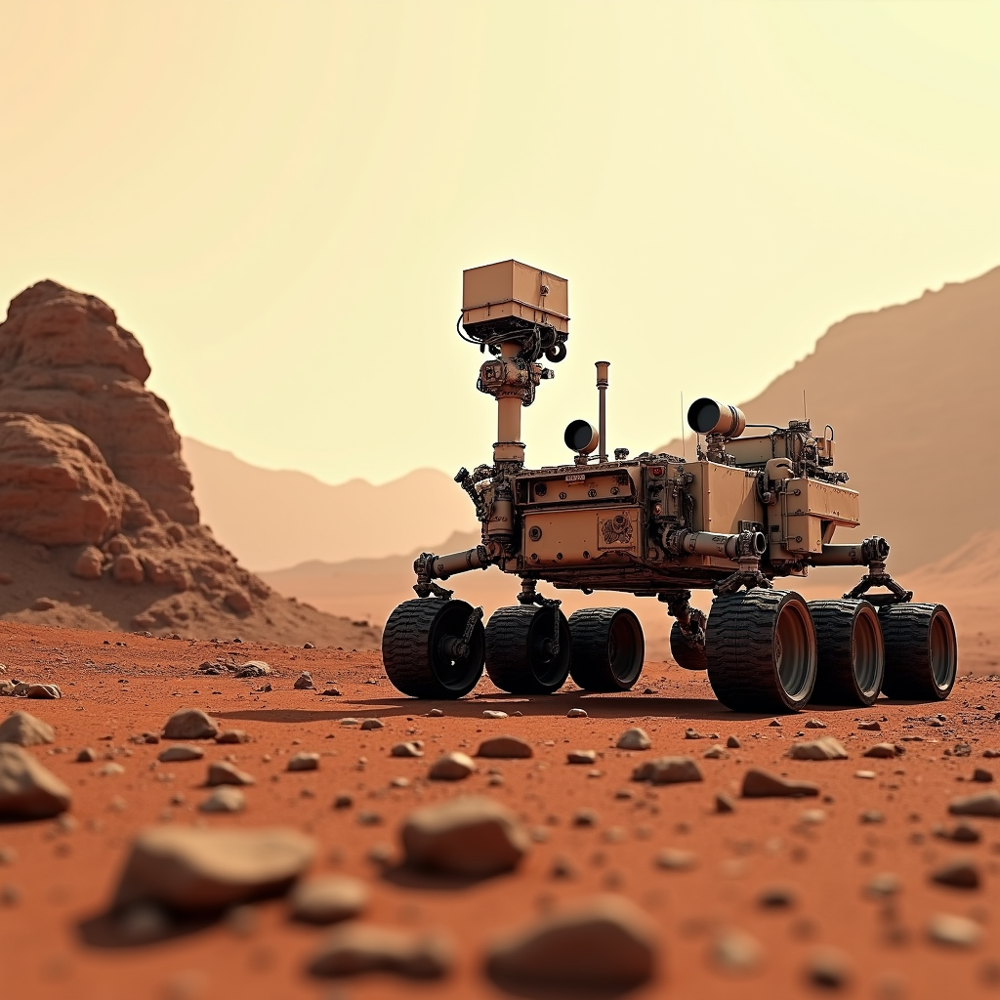
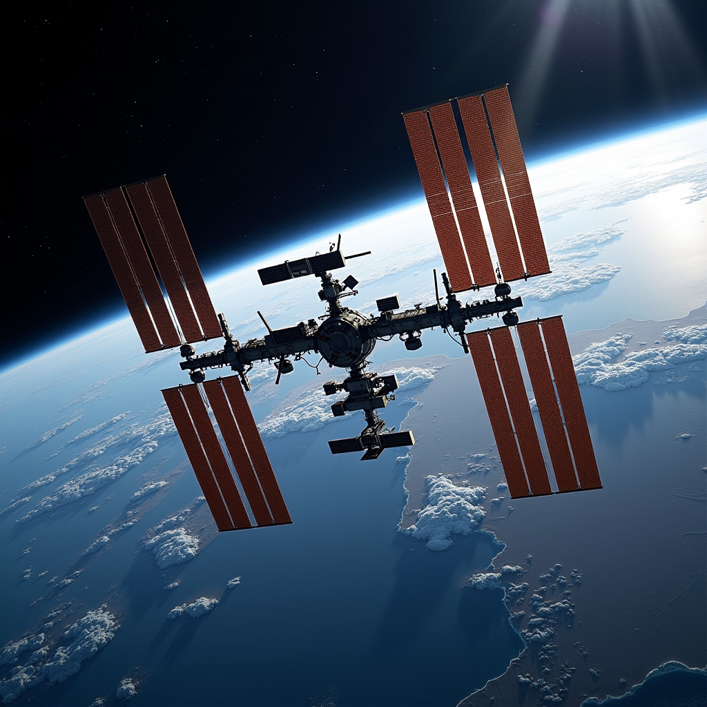
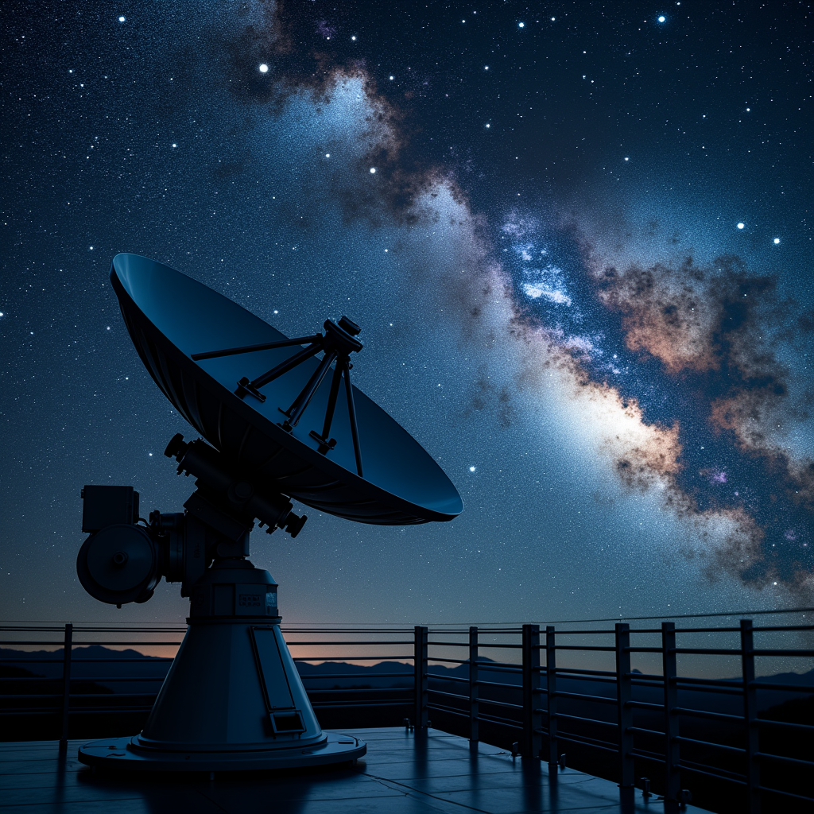
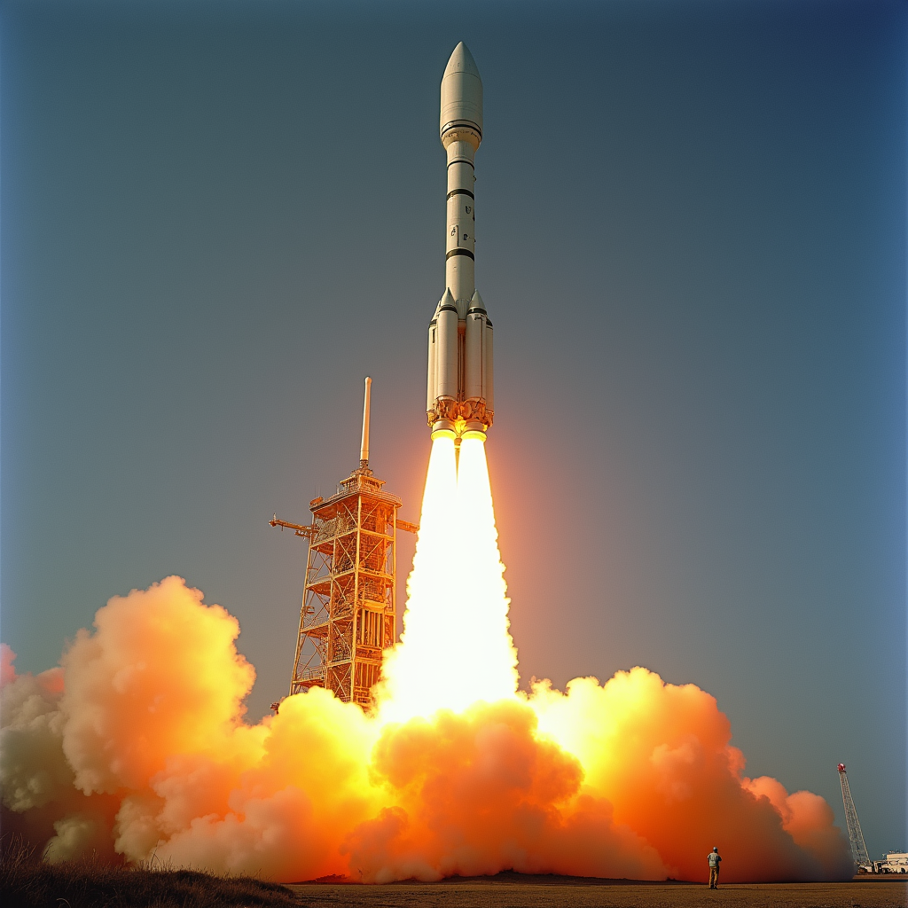

Bienvenue dans l'univers de l'exploration spatiale
L'exploration de l'espace représente l'une des plus grandes aventures de l'humanité, symbolisant notre désir inné de découvrir l'inconnu et de repousser les limites de nos connaissances. Depuis le lancement du premier satellite artificiel en 1957, l'humanité a parcouru un chemin extraordinaire, transformant les rêves scientifiques en réalités technologiques spectaculaires. Cette quête nous a permis de mieux comprendre notre place dans l'univers et d'acquérir des technologies qui ont révolutionné notre vie quotidienne.
Le présent site se propose de vous guider à travers les grandes étapes, les découvertes majeures et les défis fascinants de cette exploration sans fin. Des premières fusées aux rovers martiens, de la Station spatiale internationale aux télescopes détectant des exoplanètes, chaque chapitre de cette histoire témoigne de l'ingéniosité humaine et de notre capacité à rêver grand.
Les débuts de l'ère spatiale : 1957-1969
L'ère spatiale a véritablement commencé le 4 octobre 1957, lorsque l'Union soviétique a lancé Spoutnik 1, un satellite de 83,6 kilogrammes en orbite terrestre. Cet événement a marqué un tournant décisif dans l'histoire de la technologie et a déclenché une compétition féroce entre les États-Unis et l'URSS, connue sous le nom de "course à l'espace". Cette rivalité a stimulé des investissements massifs dans la recherche et le développement aérospatial.
Le 12 avril 1961, Youri Gagarine, cosmonaute soviétique, est devenu le premier être humain à voyager dans l'espace à bord de Vostok 1, complétant une orbite en 108 minutes. Quelques semaines plus tard, le 5 mai 1961, l'astronaute américain Alan Shepard a effectué un vol suborbital de 15 minutes, marquant les débuts de la présence humaine américaine dans l'espace.
L'apogée de cette période reste la mission Apollo 11, lancée le 20 juillet 1969, quand Neil Armstrong et Buzz Aldrin ont posé le pied sur la Lune. Armstrong a prononcé ces paroles historiques : "C'est un petit pas pour l'homme, mais un géant bond pour l'humanité." Cette mission a représenté l'aboutissement de douze années d'efforts intensifs et du travail de plus de 400 000 scientifiques et ingénieurs.
Chronologie des jalons majeurs de l'exploration spatiale
- 4 octobre 1957 : Lancement de Spoutnik 1 par l'Union soviétique
- 3 novembre 1957 : Spoutnik 2 transporte la chienne Laïka, premier être vivant en orbite
- 31 janvier 1958 : Explorer 1, premier satellite américain, découvre les ceintures de Van Allen
- 12 avril 1961 : Youri Gagarine effectue le premier vol spatial habité
- 5 mai 1961 : Alan Shepard complète le premier vol spatial américain
- 20 février 1962 : John Glenn devient le premier Américain en orbite terrestre
- 20 juillet 1969 : Apollo 11, première mission habitée sur la Lune
- 14 décembre 1972 : Dernière mission Apollo (Apollo 17) sur la Lune
- 19 avril 1971 : Lancement de Saliout 1, première station spatiale
- 20 novembre 1998 : Lancement du premier module de la Station spatiale internationale
- 31 octobre 2000 : Accueil de l'équipage permanent à bord de l'ISS
- 4 janvier 2004 : Atterrissage du rover Spirit sur Mars
- 6 août 2012 : Atterrissage du rover Curiosity sur Mars
L'ère des stations spatiales et de la coopération internationale
Après l'apogée des missions Apollo, l'intérêt s'est progressivement tourné vers l'établissement d'installations permanentes en orbite terrestre. L'Union soviétique a lancé Saliout 1 le 19 avril 1971, première station spatiale au monde, suivie par une série de stations Saliout et Mir. Le 20 février 1986, le lancement de Mir a marqué une nouvelle étape : cette station a accueilli continuellement des équipages pendant plus de quinze ans.
La Station spatiale internationale (ISS), projet de coopération sans précédent entre les États-Unis, la Russie, l'Agence spatiale européenne et d'autres nations, a commencé son assemblage en orbite le 20 novembre 1998. Depuis l'arrivée de l'équipage permanent le 31 octobre 2000, l'ISS a hébergé plus de 250 astronautes et cosmonautes provenant de plus de 20 pays. Cette station orbite à une altitude d'environ 408 kilomètres et complète une orbite terrestre en 92 minutes.
L'ISS a servi de laboratoire pour des expériences révolutionnaires en microgravité, produisant des découvertes en médecine, en matériaux, en biologie et en physique qui auraient été impossibles sur Terre. Le coût total du projet ISS dépasse les 150 milliards de dollars, en faisant la structure la plus coûteuse jamais construite.
L'exploration de Mars et des mondes lointains
Mars a captivé l'imagination scientifique depuis des décennies. Le 4 janvier 2004, la NASA a lancé les rovers jumeaux Spirit et Opportunity sur la Planète rouge, chacun équipé de six roues et de dix instruments scientifiques. Spirit a fonctionné pendant six ans (bien que limité à 4,8 kilomètres de distance), tandis qu'Opportunity a opéré pendant 14 années, parcourant plus de 45 kilomètres et effectuant des découvertes cruciales sur l'histoire hydrique de Mars.
Le 6 août 2012, le rover Curiosity de 900 kilogrammes s'est posé dans le cratère Gale en utilisant une technique révolutionnaire de "grues volantes". Curiosity a confirmé la présence de méthane dans l'atmosphère martienne et a découvert une composition atmosphérique complexe. Le rover Perseverance, lancé le 30 juillet 2020, continue cette exploration avec un nouvel objectif ambitieux : rechercher des signes de vie microbienne ancienne.
Au-delà de Mars, les sondes Voyager 1 et Voyager 2, lancées en 1977, continuent de transmettre des données après plus de 45 ans de voyage. Voyager 1 a atteint l'espace interstellaire en août 2012, devenant l'objet humain le plus éloigné jamais lancé. Ces missions illustrent notre capacité à explorer les extrémités de notre système solaire.
Les défis et l'avenir de l'exploration spatiale
L'exploration spatiale contemporaine affronte des défis technologiques, financiers et humains considérables. Le coût des missions reste prohibitif : une mission vers Mars coûte généralement entre 2 et 5 milliards de dollars. Les risques physiologiques pour les astronautes en missions longues durée, notamment l'atrophie musculaire et la perte de densité osseuse, demandent des solutions innovantes.
Cependant, la réémergence des entreprises privées du secteur spatial, menées par SpaceX, Blue Origin et Virgin Galactic, est en train de démocratiser l'accès à l'espace. La réutilisabilité des fusées, notamment les lancements et atterrissages du Falcon 9 de SpaceX depuis décembre 2015, a réduit les coûts de façon dramatiqu. Le tourisme spatial commercial commence à devenir réalité, avec les premiers vols spatiaux civils lancés en 2021.
Les objectifs futurs incluent l'établissement de bases humaines permanentes sur la Lune et Mars, l'exploration des lunes de Jupiter et Saturne, et la détection de vie extraterrestre. Avec plus de 5 500 exoplanètes confirmées au 1er janvier 2024, l'univers offre un terrain d'exploration pratiquement illimité. L'exploration spatiale restera une quête capitale pour l'humanité au cours des décennies à venir.
"L'espace, c'est la dernière frontière." - Gene Roddenberry, créateur de Star Trek, qui a inspiré une génération d'astronautes et de scientifiques.



